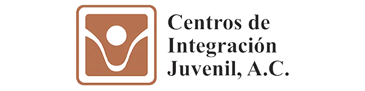
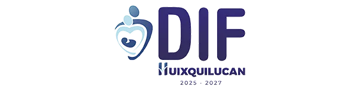
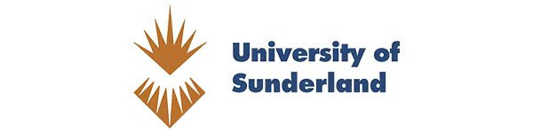
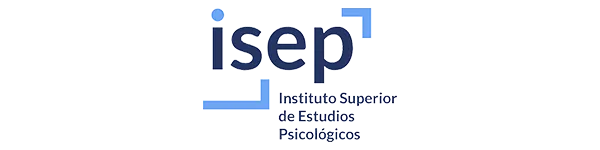
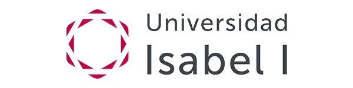

Prácticas desde el primer semestre
Aplicas lo que aprendes desde el arranque de la carrera, no solo en la teoría.
Conoce con quiénCiencias Sociales y Derecho
Escucha. Entiende. Ayuda.
¿Es para ti?
Si te reconoces en lo siguiente, la Psicología puede ser tu lugar.
Te preguntas por qué las personas piensan, sienten y actúan como lo hacen.
Quieres acompañar el bienestar emocional de otros y ayudarlos a crecer.
Te intriga investigar el comportamiento humano y descubrir sus porqués.
Sabes escuchar y observar para comprender antes de juzgar.
En la Anáhuac estudias una psicología integral: una formación humana, científica, ética y centrada en la persona, abierta a los distintos enfoques y áreas de la disciplina.
¿Por qué la Anáhuac?
Diferenciadores concretos que hacen distinta tu formación desde el primer día.
Aplicas lo que aprendes desde el arranque de la carrera, no solo en la teoría.
Conoce con quiénProfundiza en las áreas clínica, neuropsicología, organizacional y educativa.
Accede a pruebas psicológicas y talleres de evaluación: inteligencia, personalidad, infantil, adolescentes y adultos.
Programa avalado por el CNEIP y por FIMPES con la acreditación "Lisa y Llana".
Súmate a proyectos que estudian el comportamiento humano y generan conocimiento.
Cursa materias distintivas de la Anáhuac:
375 créditos totales
Plan de estudios
La Licenciatura en Psicología dura 8 semestres (Modelo 2025), con 375 créditos totales.

Campo laboral
¿De qué se trabaja al estudiar Psicología? La respuesta es amplia: tu formación te prepara para ejercer en muy distintos entornos, no en uno solo.

de empleabilidad de recién egresados
Top 10 en América Latina · 2.º nacional — QS Graduate Employability Ranking (Red Anáhuac)
Instalaciones y campus
La licenciatura es presencial y se imparte en nuestros dos campus. Elige el que mejor te quede: los dos comparten la misma comunidad y experiencia Anáhuac.
Av. Universidad Anáhuac 46, Lomas Anáhuac, Huixquilucan, Estado de México.
Conoce el campusAv. de los Tanques 865, Torres de Potrero, Álvaro Obregón, Ciudad de México.
Conoce el campusLeones Anáhuac que han transformado sus vidas con nosotros
Colaboradores y docencia
Aprendes de la mano de una planta docente con experiencia clínica y de investigación, y realizas prácticas en instituciones aliadas de primer nivel, en México y en el extranjero.

Doctora en Psicología Clínica
Evaluación y psicopatología

Doctor en Neurociencias
Neuropsicología

Maestra en Psicología Organizacional
Gestión del talento

Doctor en Psicología Educativa
Intervención psicopedagógica



Inglaterra España
España
España
EspañaSiguiente paso
Avanza a tu ritmo: explora costos y becas, revisa fechas, inicia tu admisión o habla con un asesor.
Calcula la inversión de tu licenciatura y conoce las opciones de pago.
CotizarDescubre las becas y apoyos económicos disponibles para estudiar aquí.
Ver becasConsulta el calendario de exámenes de admisión a lo largo del año.
ConsultarComienza tu proceso 100% en línea en solo 6 pasos.
EmpezarResuelve tus dudas con un asesor preuniversitario, por campus.
ContactarPreguntas frecuentes
La Licenciatura en Psicología dura 8 semestres (Modelo 2025), equivalentes a cuatro años.
Es presencial y se imparte en modalidad bicampus: Campus Norte (Huixquilucan, Edo. Méx.) y Campus Sur (Álvaro Obregón, CDMX).
Sí. Realizas prácticas desde el primer semestre en instituciones aliadas, nacionales e internacionales.
Puedes enfocarte en clínica, neuropsicología, organizacional y educativa, con materias regionales como Psicología Positiva, Forense y Adicciones.
En clínicas y consultorios, hospitales, ambientes educativos, empresas, centros comunitarios e instituciones de investigación.
Consulta el costo vigente y las opciones de pago con nuestro cotizador; además hay becas y apoyos disponibles.
Mucho más que solo una Universidad.
Conoce por qué vivirás una experiencia universitaria única con nosotros.
Conoce la experiencia AnáhuacDesarrolla las habilidades, conocimientos y experiencia que necesitas para construir un perfil integral. Nuestro modelo educativo integra formación profesional, intelectual, humana, social y espiritual.
Amplía tu experiencia con intercambios, convenios y opciones académicas que amplían tu perspectiva y enriquecen tu formación dentro y fuera del aula.

Haz deporte, participa en actividades culturales, involúcrate en proyectos sociales y forma parte de una comunidad activa.
Disfruta de espacios creados para tu desarrollo integral: deportes, salud, innovación y recursos únicos que encontrarás en la Universidad Anáhuac.


Solicita información
Cuéntanos qué te interesa y te enviaremos el material directamente a tu correo o WhatsApp. No recibirás la llamada de un asesor; si prefieres hablar con alguien, escríbenos desde «Elige el siguiente paso».